Civil engineering graduate with more than two years of experience across structural design, site supervision, quality assurance and technical support, plus current Australian residential construction-site exposure. Seeking to contribute to substations, renewable-energy infrastructure, BESS, wind-farm and grid-connection projects.
Civil engineering graduate completing a Master of Engineering (Civil) at Western Sydney University in December 2026, with more than two years of professional experience across structural design, site supervision, quality assurance and technical support, plus current Australian residential construction-site exposure. Brings practical experience with foundations, reinforcement, concrete, steel, drawing checks, NCRs, QA sign-offs, subcontractor coordination and two-week look-ahead scheduling, supported by Civil 3D, 12d, AutoCAD, SpaceGass, Strand7, Abaqus, CIRCLY and SIDRA. Seeking to develop as a civil engineer contributing to substations, renewable-energy infrastructure, BESS, wind-farm and grid-connection projects.
Site delivery, structural design and technical client support across Australia and Bangladesh.
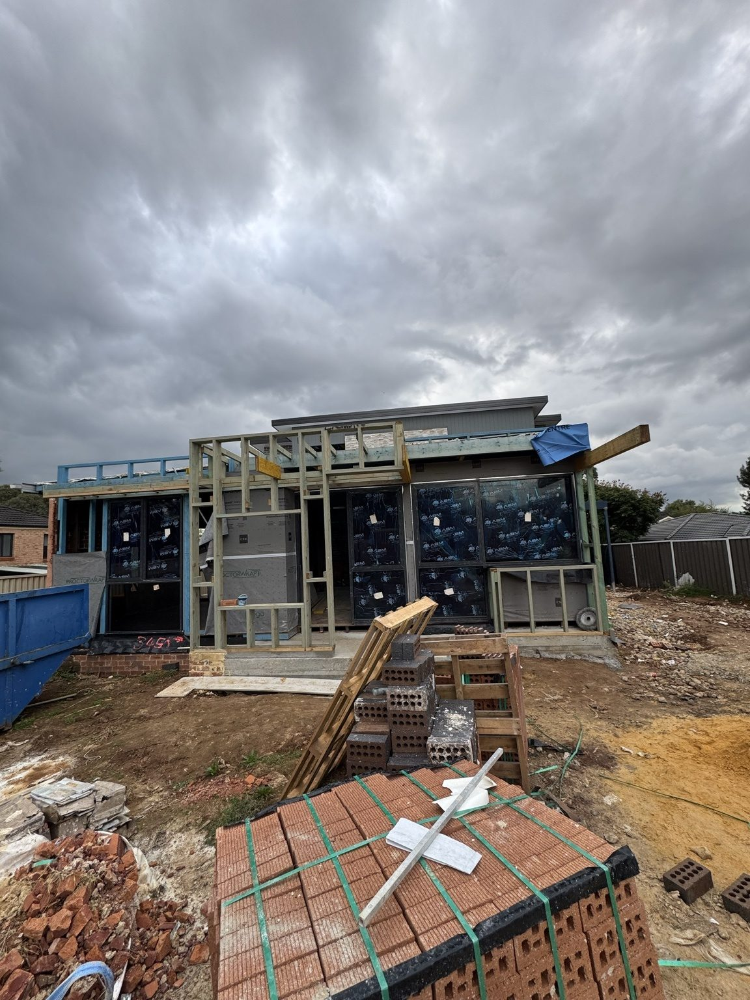
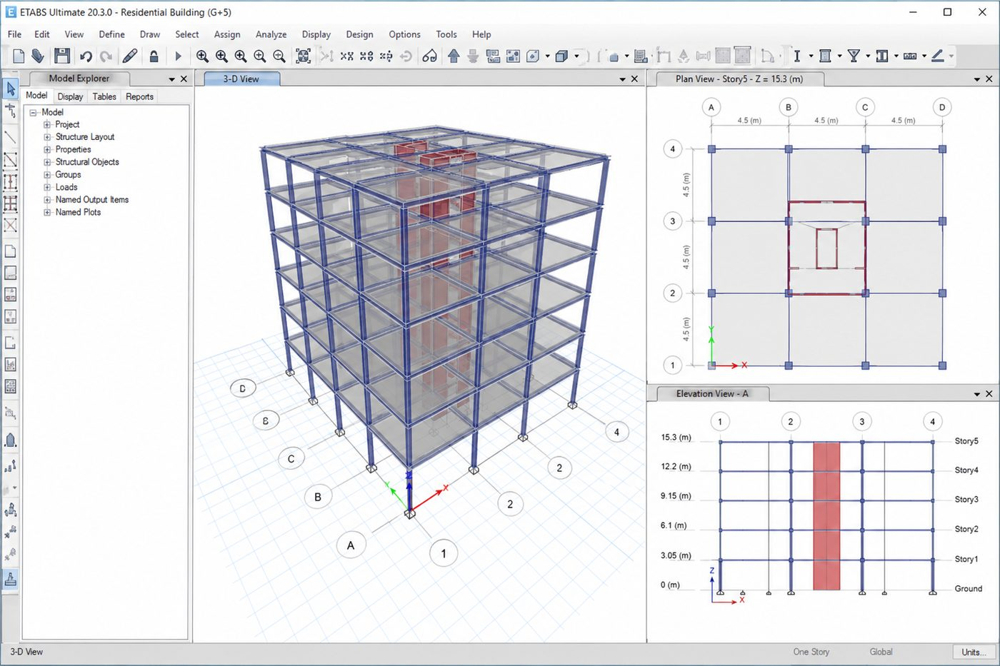
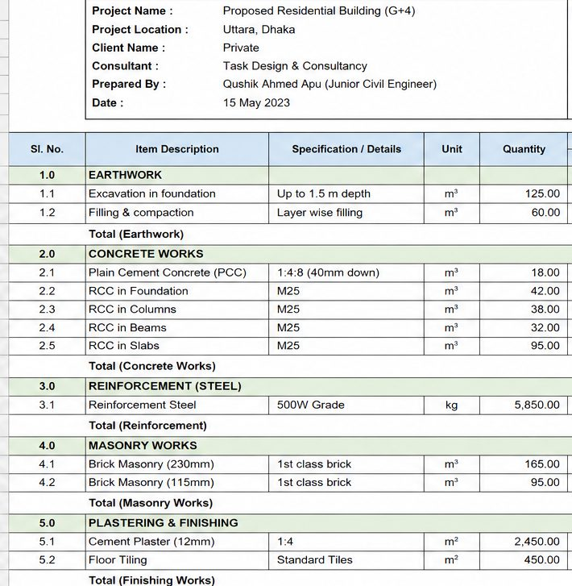
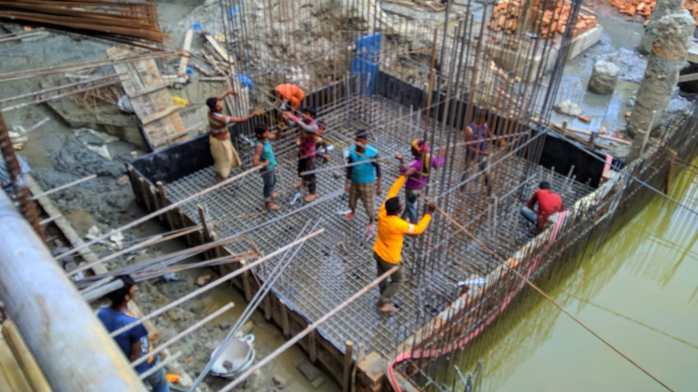
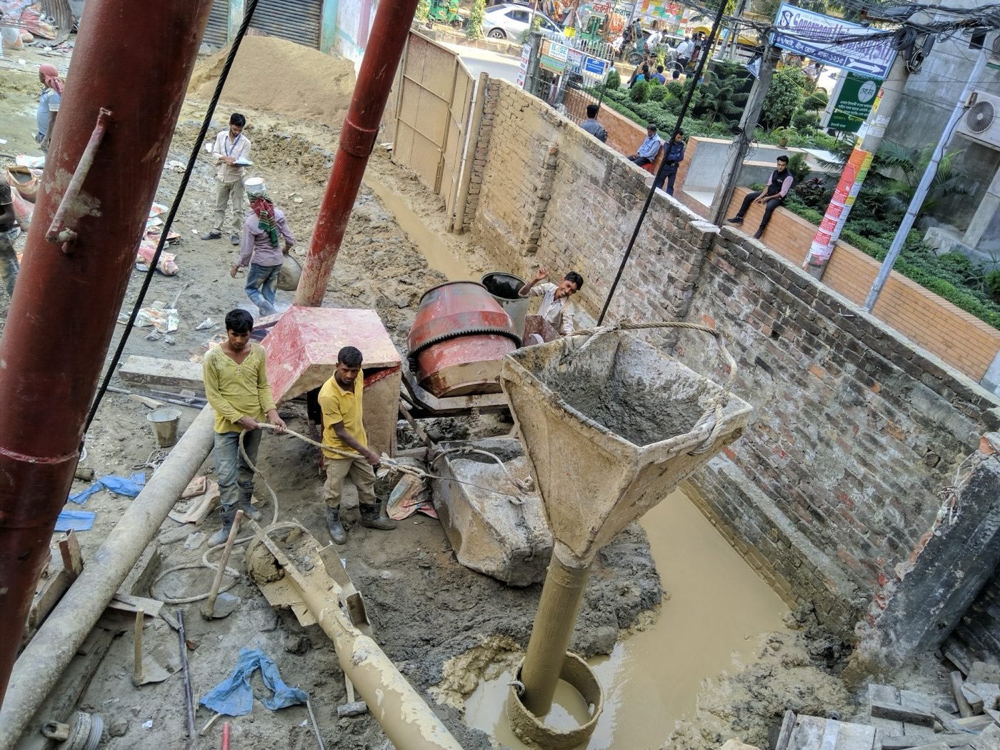
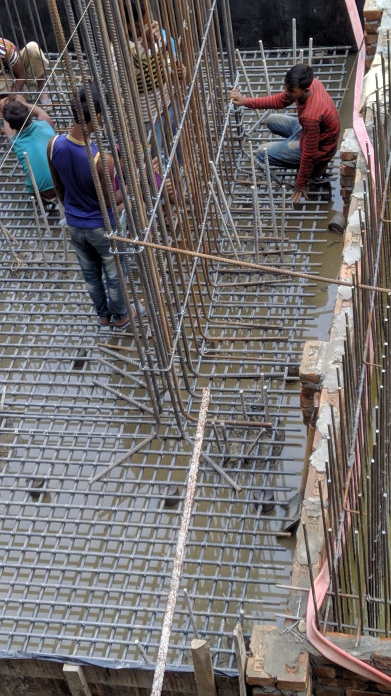
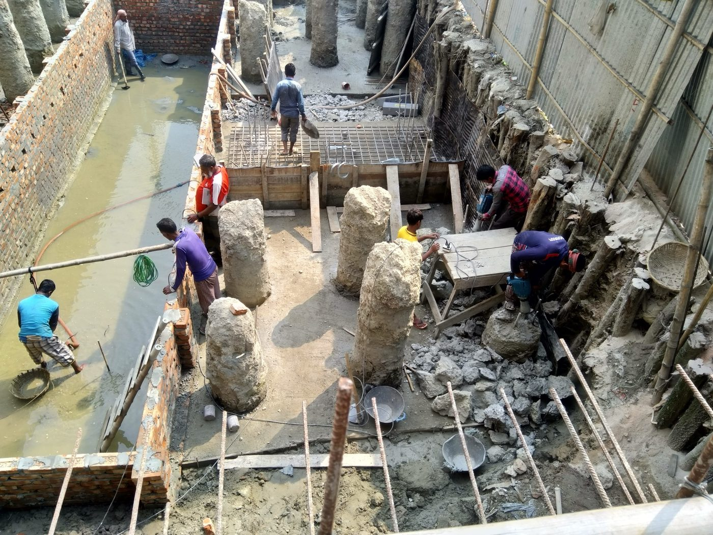
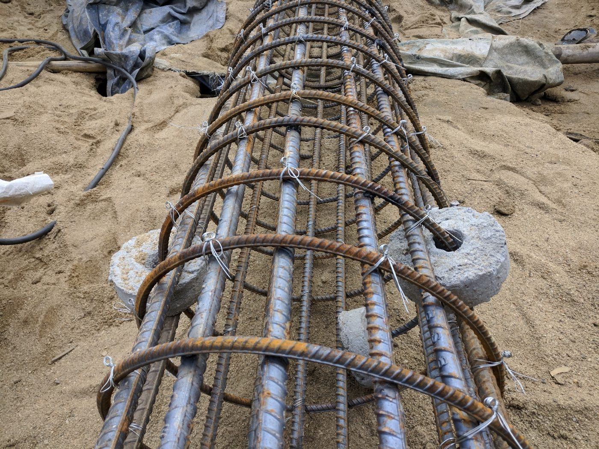
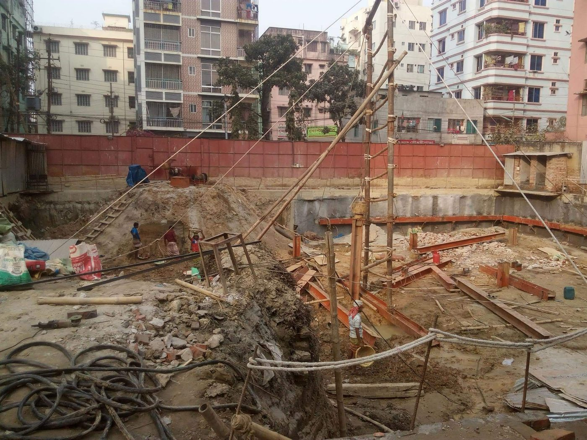
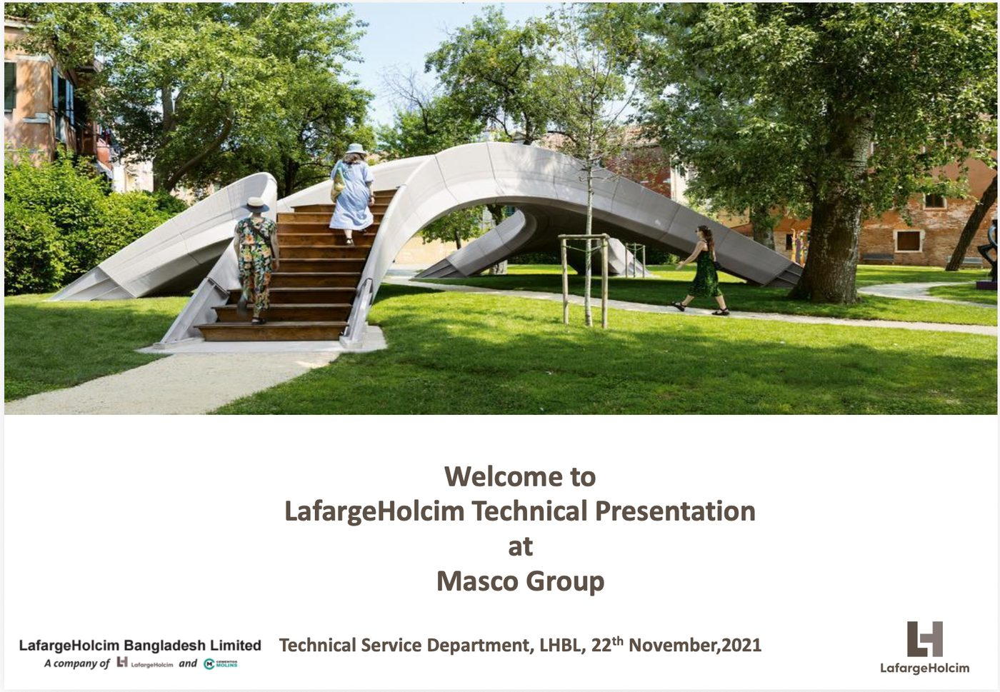
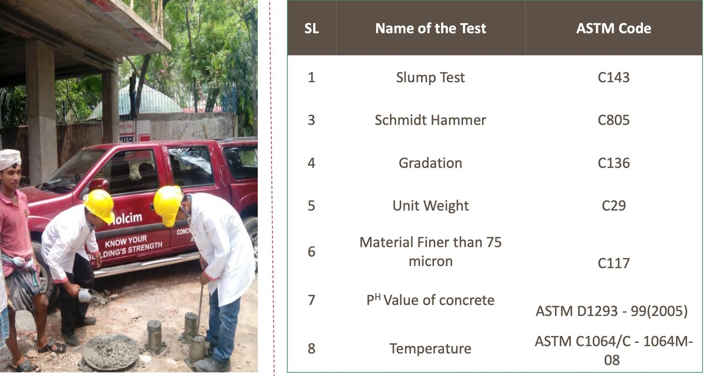
Technical support exposure covered cement selection, durability, waterproofing, early-strength applications and material testing.
Research-led and analytical work spanning materials, pavements, structures and transport.
SpaceGass structural modelling software
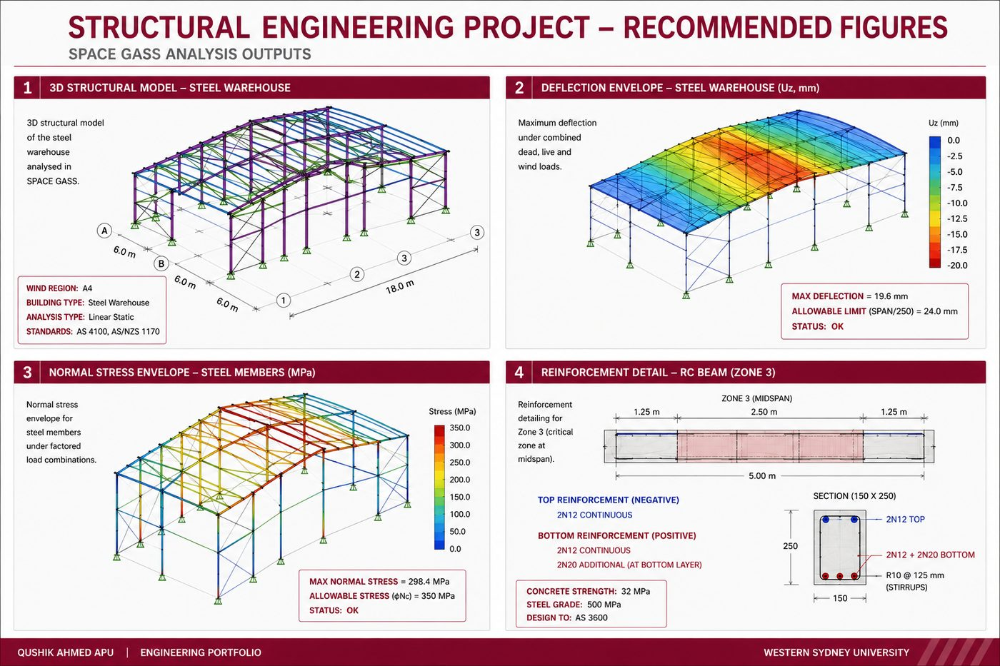
Roundabout and signalised models built in SIDRA Intersection v9.1 to compare capacity, delay and level of service under AM-peak demand, to Austroads Guide to Traffic Management guidance.
| Approach | Roundabout | Signalised |
|---|---|---|
| North | A · 7.2 | B · 18.6 |
| East | B · 9.8 | C · 27.4 |
| South | A · 6.5 | B · 16.7 |
| West | A · 6.3 | B · 15.1 |
| Overall | A · 7.6 | B · 19.5 |
| Unit Process | Governing Design Condition | Final Adopted Design |
|---|---|---|
| Screening | Peak flow = 0.2755 m³/s | 0.80 m channel width, 0.75 m depth, 55° screen angle, 50 mm bar spacing |
| Grit chamber | Peak flow = 0.2755 m³/s | 30 m × 0.95 m × 1.20 m; volume = 34.2 m³ |
| Equalisation basin | 24-hour cumulative flow variation | 25 m × 21 m × 4.0 m; volume = 2100 m³ |
| Primary sedimentation tank | Average flow and HRT | Circular tank, D = 16.5 m, h = 4.0 m, V = 850 m³ |
| Aeration tank | Average organic loading | 2 tanks, 55 m × 12.5 m × 4.5 m each; total V = 6187.5 m³ |
| Secondary sedimentation tank | Peak hydraulic + solids loading | Circular tank, D = 38 m, h = 4.0 m, V = 4536 m³ |
| Metric | R1 | R2 | R3 |
|---|---|---|---|
| Operating conditions | 20-day SRT, 2 feeds/day | 10-day SRT, 2 feeds/day | 10-day SRT, 4 feeds/day |
| Phosphate (PO₄-P) removal | 23.2% | 83.7% | 42.9% |
| Total phosphorus removal | 33.3% | 66.7% | 46.7% |
| Total nitrogen removal | 52.7% | 52.8% | 50.4% |
| MLSS / MLVSS (mg/L) | 1540 / 1395 | 1300 / 1165 | 1265 / 1075 |
| Live-cell fraction (flow cytometry) | 40.20% | 54.50% | 51.33% |
Designs, drawings, specifications and technical reports in AutoCAD, Civil 3D and 12d.
Site inspections, construction support, scheduling and coordination with clients, contractors and consultants.
AS/NZS and Austroads compliance · Engineers Australia student member · Subclass 485 work rights · Full AU/NZ driver's licence.